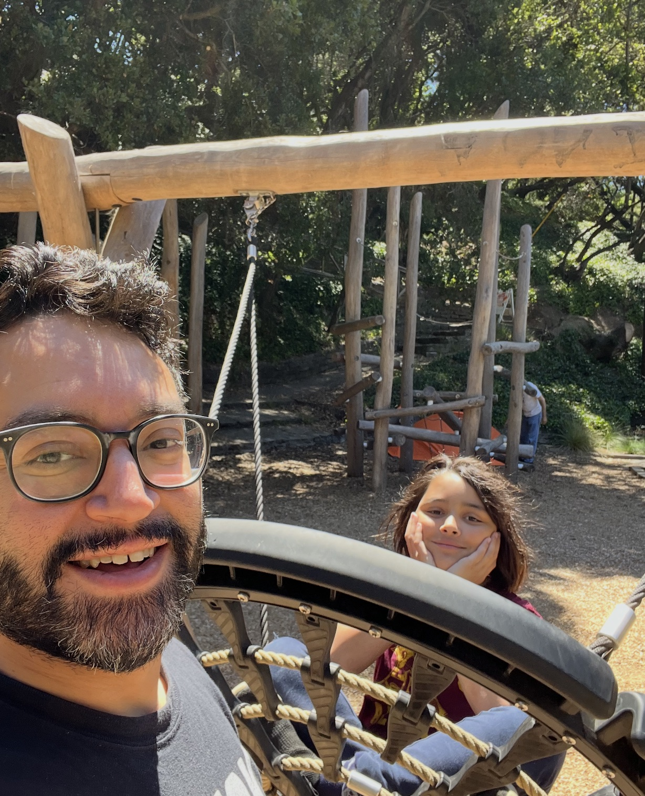
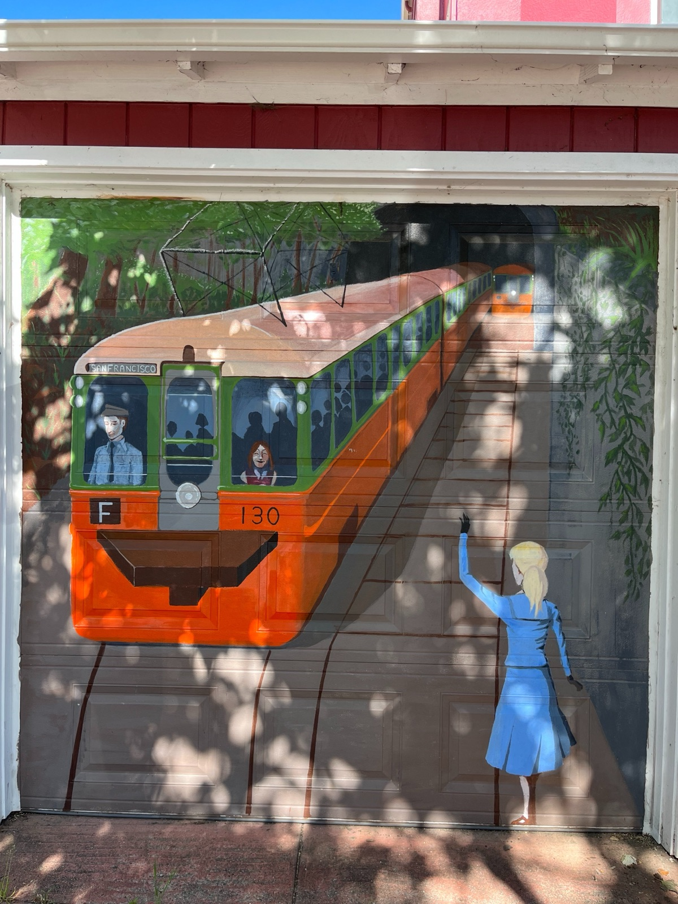
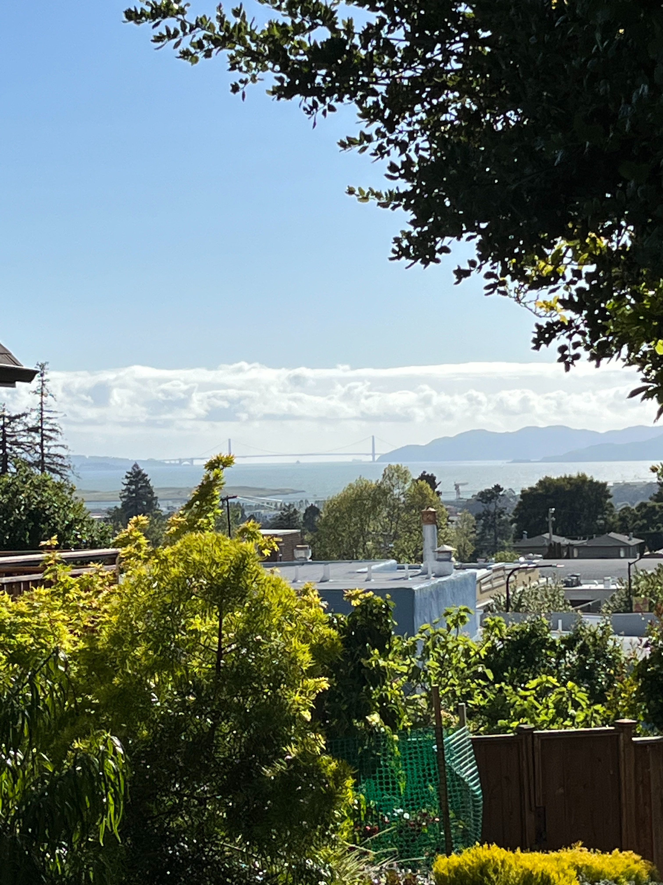
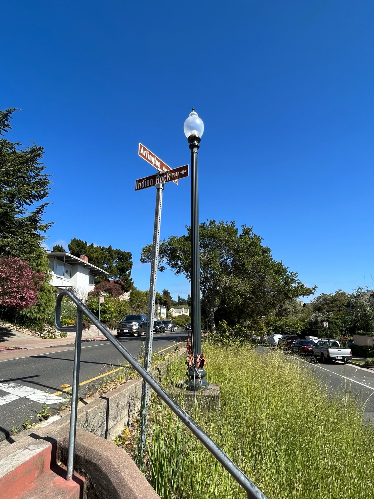
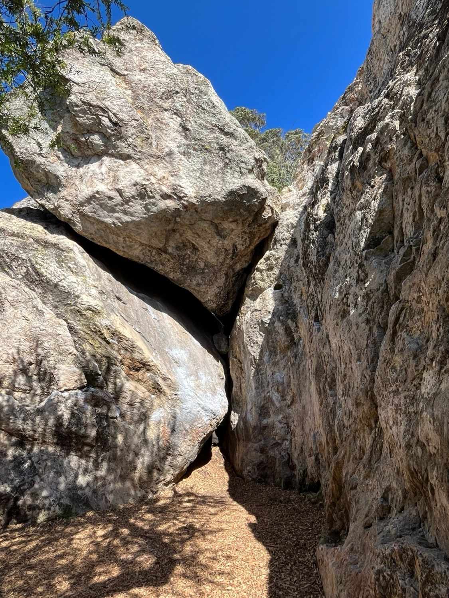
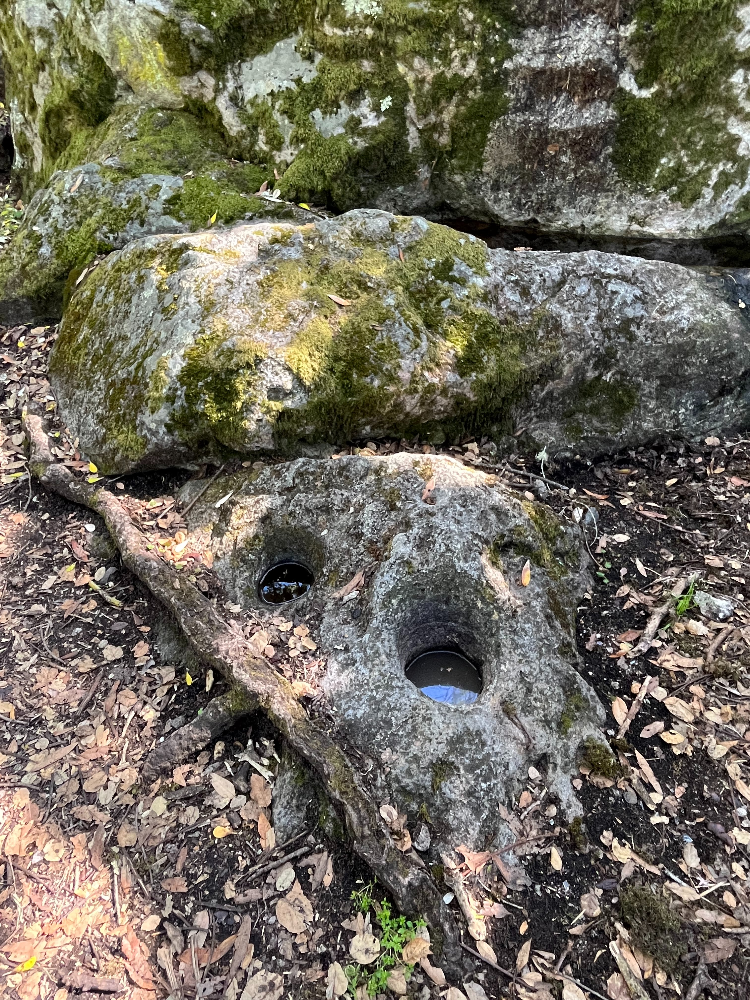
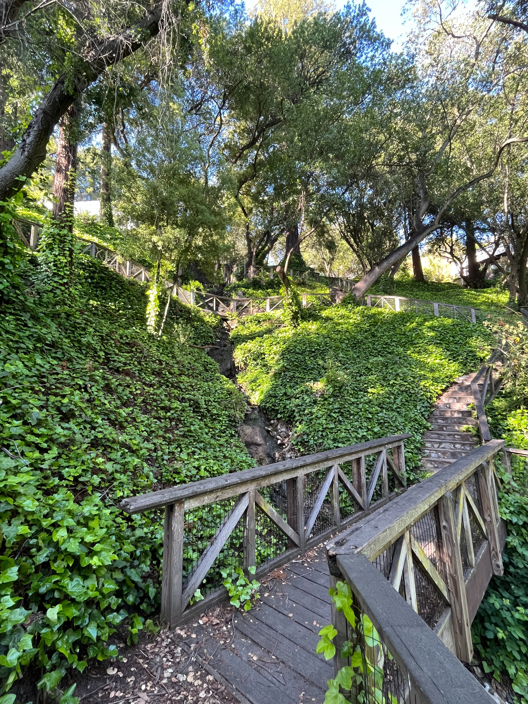

Thousand Oaks → John Hinkel Park
A walk across Berkeley's hill neighborhoods that stitches together local history, a little geology, plant identification, a real rock to climb, and a quiet waterfall to finish. It runs from Thousand Oaks Elementary up the Indian Rock Path and down San Diego Road into John Hinkel Park.

All photographs by Kevin Selhi.
Before You Go
This hike is built for a small group of kids with a few adults. The whole loop takes about 90 minutes at an easy pace with plenty of stops.
What it's good for
What to bring
- Map of Berkeley and Its Pathways
- At least 2 chaperones (1:4 adult-to-student is ideal)
- Orange slices
- Drinking water
The Trail, Stop by Stop
-
Start: the Trolley Mural
Begin at Thousand Oaks Elementary on Colusa Avenue. Walk east on Catalina Avenue toward Alameda, then turn right onto Alameda. Look for the mural at 841 Alameda commemorating the old East Bay trolley system. Electric streetcars began running through Berkeley in 1891 — the earliest lines ran along Grove Street (now MLK Jr. Way & The Alameda).

The streetcar mural at 841 Alameda. -
Up the Indian Rock Path — and the Bay
Continue south on Alameda toward Solano. Cross toward the Indian Rock Path (between 899 and 901 Alameda) — one of the stairways built to help residents reach the old trolley. Head up the stairs, pausing to identify plants, flowers, and trees. Before crossing Contra Costa Avenue, stop to take in the view of the Golden Gate Bridge and San Francisco Bay. Good moment for water and orange slices.

The Golden Gate and the Bay, from the path. -
Crossing Arlington — meet Harold
Carry on to Arlington Avenue. Before crossing, split into groups of no more than five (chaperones included) and cross carefully. Pause on the median to read the plaque for "Harold, the Notable Lamppost." An anonymous artist began installing these plaques around Berkeley in April 2019. Ask the kids if they've spotted any others around town.

"Harold, the Notable Lamppost" — one of Berkeley's mystery plaques. -
Indian Rock Park: a rock to climb
Cross Arlington and continue east on the Indian Rock Path into Indian Rock Park. Follow the path on the left to the bouldering wall. This formation was used by the U.S. Army during World War II "to develop training manuals … for surprise approaches against Germany." Allow 20–30 minutes to climb. Ask who wants to ascend and who doesn't, then split into two groups — one chaperone with the climbers, one with everyone else.

The bouldering formation at Indian Rock Park. -
Mortar Rock & the Ohlone
Reassemble at Indian Rock Avenue and San Mateo Road. Walk north on Indian Rock Avenue toward San Diego Road, identifying plants as you go, and follow the bend. At the intersection with San Diego Road, point out Mortar Rock Park. The Lisjan (Ohlone) carved mortar pits into the rock by hand and used them to grind acorns and seeds. Encourage the kids to come back and visit with family.

Ohlone mortar pits, ground into the stone by hand. -
The Waterfall at John Hinkel Park
Turn onto San Diego Road and continue north into John Hinkel Park. Follow the path to the waterfall in the northernmost corner. Ask the kids to listen to the water for 3–5 minutes, then ask how they feel. Time in nature — green spaces and the sound of running water — improves brain function and mental health, and lowers stress. The benefits include better attention, lower stress, improved mood, reduced risk of psychiatric disorders, and even upticks in empathy and cooperation. Remind everyone that these parks and paths are free and for everyone. Then descend toward the playground.

The waterfall — the hike's quiet finish.
At the Waterfall, Stay a Little Longer
That pause by the falls is the perfect place to begin a nature journal. Our companion page walks you through helping a child make their very first nature drawing — and grow it into a journal they'll keep long after the walk home.